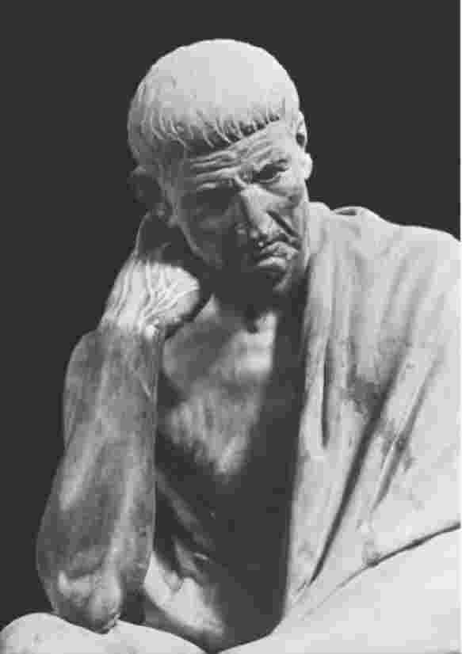
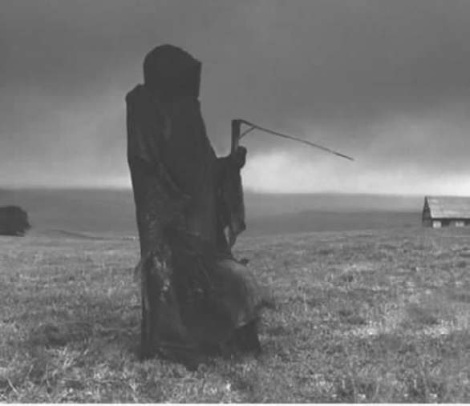

我们在前面几章关注得更多的是意义，而不是人生。然而，“人生”这个词就像“意义”一样问题多多，原因不难得知。我们之所以无法讨论人生的意义，真的是因为不存在“人生”这种东西吗？正如维特根斯坦会说的，我们不正是被自己的语法所迷惑，像创造“番茄”这个词一样，创造了单数形式的“人生”这个词吗？也许，我们之所以会有“人生”这个词，仅仅是因为我们的语言本质上具有把抽象概念具体化的作用。正如维特根斯坦所说，“本质 是由语法来表达的”。 [37] 说到底，人的一生经历无数事情，从分娩到跳木屐舞，这些怎么能汇总成一个单一的意义呢？每样事物都应该不祥地与其他事物有共鸣，构成一个极端明晰的总体，这不正是妄想症的幻觉吗？或者如果你愿意的话，也可以说是哲学的幻觉，借用弗洛伊德的诙谐评论来说，是最接近妄想症的东西？甚至单个人的人生也构不成一个统一总体。诚然，有人把自己的一生看做一个有头有尾的精彩故事，但并非所有人都这么想。那么，如果连一个人的人生都做不到，千千万万的人生加起来怎么能构成一个连贯的总体呢？人生确实没有足够的条理，甚至连一个谜都构不成。
“人生的意义”满可以表示“意义总和”，而分娩和跳木屐舞则被认为是一个单一的、有意义的总体的各个方面。即便是外观最美、浑然一体的艺术作品也做不到这一点。即便是最宏大的历史叙事，也不会认为自己能绝对地理解一切事物。马克思主义无法解释灵猫那发出肛门臭味的腺，而马克思主义并不认为这是它的一个缺陷。关于西约克郡的瀑布，佛教没有任何官方立场。要人生的每件事都构成一个连贯模式的一部分，这极不可能。那么，换做大部分事情呢？或者，“人生的意义”表示的是“人生的本质 意义”——不是囊括进一切，而是归结出要点？例如“人生的意义是受苦”这样一个陈述，并不是说受苦是人生的全部，或是人生的关键、目标，而是说它是人生最重要、最基本的特征。照这么说，我们只要沿着这条线索追溯人生，就可以领悟那整个令人困惑的设计。
那么，是否存在一种叫做“人生”的现象，可以充当某种连贯意义的承担者呢？人们有时当然会用这样宽泛的词语来谈论人生。人生是一缕烟尘、一个娼妓、一场歌舞、一溪泪水或一床玫瑰。这些在商店里陈列已久的旧标签不足以支撑我们的立论。然而，就此认为所有关于人生的元陈述（meta-statements）都是空洞的，这本身就是一种空洞的观点。只有实在的、具体的真理才具有力量——这种观点是错误的。例如这样一个概括：历史上的大多数人都一事无成、不幸而艰辛，这种概括怎么样？它当然比下面这个命题更令人不安：特拉华州的大多数人过着一事无成、不幸而艰辛的生活。
也许，我们不可能高明地概括出人生的意义，因为我们必须跳出人生之外才能看清它。这就像我们无法跳出自己的皮囊审视自己。只有完全超脱人类存在，比如上帝，才能以全局的眼光考察人生，看它是否说得通？ [38] 这接近尼采在《偶像的黄昏》中的论点，他说我们不能判定人生本身有价值或无价值，因为我们所遵循的判断标准本身也属于人生的一部分。但是，这无疑经不起推敲。你不必完全跳出人类存在才能评价它，就像你不必跑到新西兰才能整体性地批评英国社会一样。诚然，没有人曾真正看到过英国社会的整个面貌，正如没有人看过童子军运动的全貌；可是，我们可以依照自己熟知的现实部分作出合理的推论，来判断那些我们不熟悉的部分。这不是要观察全貌，而是要观察到足够多的部分，能够辨析其典型特征便可。
关于人性的概括如果有效，其中一个原因是，人类同属于一个自然物种，很大程度上具有共通性。这么说不是要忽视人类在政治上激增的差异和对比极具政治能量。但是，那些后现代思想家被差异所迷惑，无论走到哪儿都一成不变地见到差异，他们不应该忽视我们的共通特征。人类内部的差异极其重要，但这些差异还不足以充当建立伦理和政治的基础。
另外，即使一个人在公元1500年无法描述“人类境况”，他肯定可以在2000年时做到。那些对此观点心存反感的人看起来没听说过全球化。正是跨国资本主义帮助人类成为一个整体。我们目前至少具备的共同点，是面对各种威胁人类生存时的求生意志。从一种意义上说，那些否认人类境况的现实的人，也会否认全球变暖这一事实。没有什么能比物种灭绝的危险更能团结该物种的全体成员。至少，面对死亡时，我们会走到一起。
如果人生的意义在于人类的共同目标 ，这个问题似乎就不难解答了。我们每个人追求的都是幸福。诚然，“幸福”是一个难以说服人的词语，像“假日野营”似的，让人联想起穿着花衣服狂欢作乐的场景。但正如亚里士多德在他的《尼各马可伦理学》中所说，幸福充当了人生的一种基础，因为你不能问我们为什么 要追求幸福。它不像金钱或权力一样是追求其他东西的手段。它更像是希望得到尊重。想要幸福，这似乎是我们人性的一部分。这里关系到某种基础性的条件。而问题在于，幸福这个概念太缺乏确定性。幸福似乎既重要，又空洞。什么能算做幸福呢？如果你恐吓老太太而感到幸福，这算幸福吗？一个决心成为演员的人可能一贫如洗，但还要花费无数个小时试镜，却徒劳无功。大部分时间她心情焦躁、低落，有时还要挨饿。她不是那种我们通常称之为幸福的人。她的人生没有欢乐。但可以这么说：她准备通过牺牲自己的幸福来追求幸福。
幸福有时被看做一种心理状态。但亚里士多德并不这么想。我们通常用“福祉”（well-being）来翻译他对幸福的叫法，而福祉是一种我们所说的灵魂的状态，对亚里士多德而言，福祉不仅包括存在者的内在状态，还包括人的行为倾向。正如维特根斯坦所说，心灵的最佳形象是身体。如果你想观察一个人的“精神”，就去看他的做事方式。在亚里士多德看来，幸福是通过美德实现的，美德首先是一种社会实践，而不是一种心灵态度。幸福是实际的生活方式的一部分，不是某种私密的内在满足。按照这种理论，虽然你无法用二元论的模式来观察人类，但你可以观察某人的行为一段时间，然后宣布“他是幸福的！”并且，那个人不必非得满面笑容或手舞足蹈。

图9 希腊哲学家亚里士多德的雕像
朱立安·巴吉尼在他的《一切都是为了什么？》一书中关于幸福的讨论完全没能注意到这一点。他为了表明幸福不是人生的全部内容和目的，举了一个例子说，如果你准备开始追求幸福，然后看到有人陷入了流沙，这时候去救他们要比追求你的个人愿望更为妥当。 [39] “准备开始追求幸福”这种话当然很诱人：首先，这让幸福听起来像是一项私人事业，其次它让幸福听起来像是去城里逍遥一个晚上似的。实际上，这会让幸福听起来更像是快乐：从流沙里救人可不算数，因为没什么乐趣。事实上，巴吉尼就像是大多数道德哲学家一样，在他书中的另一处说快乐是一种无法持久的情绪，理想的幸福则是一种存在的持久状态。你可能体验到强烈的快乐，却没有一丝幸福；正如你似乎可以出于某种可疑的理由（例如恐吓老太太）感到快乐，你也可以享受某些道德败坏的快乐，例如通过虐待敌囚取乐。
有一条显而易见的论点可以反驳巴吉尼的例子。从流沙中救人难道不能算做个人幸福的一部分 ，而不是出于履行义务？只有那些沿着快乐的思路而不是亚里士多德的福祉观来思考幸福的人，才会认为这一点含糊不清。在亚里士多德看来，幸福与对美德的实践密切相关；尽管他没有谈及从流沙中救人，但是，对于他思想的伟大继承者、基督教哲学家托马斯·阿奎那而言，这当然也算是福祉的表现。阿奎那认为，这是爱的例证，而爱在根本上与幸福没有冲突。这不是说，在亚里士多德眼中幸福和快乐是简单的二元对立。相反，在他看来，具有美德的人就是那些从做好事当中获得快乐的人，那些没有从做正派的事当中感到快乐的人不是真正具有美德的人。不过，迟钝的快乐或暴君式的放荡快乐肯定是与幸福相对立的。
巴吉尼与亚里士多德相悖的幸福观还体现在他借自哲学家罗伯特·诺齐克的一个场景中。假设你被塞进一个机器，类似电影《黑客帝国》中的超级计算机，它可以让你模拟体验到完全的、连续不断的幸福。大多数人难道不会因其非现实性而拒绝这一颇具诱惑的至乐吗？我们难道不想诚实地过自己的生活，没有欺骗，意识到是自己在做主，是我们自己的努力而不是由某些精心营造的装置来满足我们的愿望？巴吉尼相信，大多数人真的会基于这些理由而拒绝这台幸福机器。他的想法当然没错。但他提供给我们的幸福观念再一次与亚里士多德相悖。它是一种心绪或意识状态，而不是生活方式。实际上，它正是亚里士多德可能无法理解的，或至少会反对的那种现代的幸福观。在他看来，你不可能一辈子坐在一台机器里体验到幸福——这不单是因为你的体验是模拟的而非真实的，还因为福祉包含一种实践的、交往的生活形式。亚里士多德认为幸福不是可能实施某些行动的内在倾向，而是创造心理倾向的行为方式。
在亚里士多德眼中，你一辈子坐在机器里不会真正感到幸福的原因，与你因为离不开轮椅或人工呼吸器而不会感到完全幸福的原因大致相同。当然，不是说残疾人就体验不到其他人自我实现的珍贵感觉；只是说，身体有障碍表明一个人无法实施某些力量和能力。按照亚里士多德的专家式定义，这些力量和能力的实施是一个人幸福或福祉的一部分。残疾人还可以充分体验到其他的“幸福”感。即便如此，与维多利亚时期否认穷人多半活得艰辛一样，作为一种道德上的虚伪，现在也时兴拐弯抹角地否认残疾人真有残疾。这是一种自欺欺人，在虚弱令人尴尬、成功无所不能的美国，这种自欺欺人表现得尤为明显。它属于西方文化的一个普遍特点，即不承认那些令人不快的真相，迫切想要把苦难扫到地毯下面。
为他人牺牲自己的幸福，这可能是我们所能想到的道德上最高尚的行为。但这并不意味着，这种行为是最典型的，甚至是人们最希望获得的爱。之所以不是人们最希望获得的爱，因为这种行为一开始便是不得不做的事情；之所以不是最典型的爱，因为正如我即将论证的，最典型的爱包含着最大限度的互惠互助。一个人可以爱她的小婴儿爱到乐意为他/她们去死的程度；但由于完整的爱也是婴儿将要习得的品质，所以，你和他/她们之间的爱无法成为人间之爱的原型，就像一个人与她忠诚的老管家之间不那么亲密的感情也不能算做人间之爱的原型一样。在这两种状况下，双方关系都不够平等。
于是，对亚里士多德来说，幸福或福祉包括着对人的某些典型才能的创造性实现。你做出多少事情，就有多少才能。它不能在孤立的条件下实现，这一点与对快乐的追求不同。亚里士多德意义上的美德大部分是社会性的。“实现自我”这一概念有点儿阳刚、脸红的意味，好像我们在说某种精神体操似的。实际上，亚里士多德脑中拥有“高尚灵魂”的道德原型大致是这样的：一位富有的雅典绅士，他没有接触过失败、损失和悲剧——有趣的是，亚里士多德却创作了世界上最伟大的悲剧论著之一。亚里士多德意义上的好人听起来更像是比尔·盖茨，而不是阿西西的圣方济各。诚然，他关心的不是作为这种或那种人——例如商人或政治家——而成功，而是要作为人而成功。在亚里士多德看来，“成为人”是我们必须掌握的能力，拥有美德的人必然善于生活。即使是这样，这种幸福论仍然是有缺陷的，因为“幸福的女人”这个观念就明确地与这一理论相矛盾。“幸福的失败”这个观念亦然。
不过，在马克思这位处于亚里士多德谱系中的道德哲学家看来，实现自我还包括，比如，欣赏弦乐四重奏或者品尝桃子。也许“满足自我”要比“实现自我”更少一些艰苦的意味。幸福是一个关于自我满足的问题，不可混同于童子军或爱丁堡公爵把人生看做一系列需要跨越的障碍和需要藏在绶带下的成就的意识。成就是在整个人生的质量语境下获得意义的，而不是（如把人生当做登山的意识）作为一系列孤立的成就高峰获得意义。
大致说来，人们要么感觉良好，要么感觉不好，并且他们自己通常会察觉到。无疑，一个人在这里无法驱除所谓的虚假意识的影响。一个奴隶可能被骗相信他自己生活在天堂般的满足感之中，而他的实际行为却流露出自己并非如此。我们有充足的资源把自己的苦难加以合理化。但比方说，有惊人的92%比例的爱尔兰人告诉问卷调查者他们感到幸福，我们只好相信他们。爱尔兰人的确有着对陌生人的友善传统，所以，也许他们宣称自己幸福的原因只是想让调查者感到幸福。但是，没有真正的理由不去认真对待他们的话。在实践的幸福或亚里士多德意义上的幸福中，自我欺骗的危险性更大。因为，你怎么能知道自己过的生活符合德性呢？也许一位朋友或观察家是比你自己更可靠的裁判。实际上，亚里士多德撰写伦理学著作的部分原因，正是要纠正人们的幸福观。他也许认为，在这个问题上存在许多虚假意识。否则，我们就很难理解他为什么要推荐一个所有人在任何情况下都应该追求的目标。
如果幸福是一种心理状态，它可能就会受制于具体的物质条件。你也可以说自己无视这些条件而感到幸福，这接近于斯宾诺莎或古代的斯多葛派的状态。然而，如果你生活在一个肮脏又拥挤的难民营里面，并且刚刚在一次自然灾害中失去了孩子，你基本上不可能感到幸福。按照亚里士多德的幸福观，这更为显而易见。你不可能变得勇敢、高尚和宽厚，除非你作为一个自由的主体生活在培育这些美德的政治环境中。这就是亚里士多德认为伦理学和政治学具有密切关联的原因。好的生活要求有一种特定的政治状态——在他看来，就是要有奴隶和顺从的女人，他们做牛做马，你忙着去追寻高尚的人生。幸福或福祉事关制度：它需要一种社会政治条件，能让你自由地发挥自己的创造性能力。如果你按照自由主义的倾向，把幸福当做一种内在的或个人的事务，这一点就不那么明显了。幸福作为一种心理状态也许需要一个不受干扰的环境，但它对政治环境没有特定要求。
这么说，幸福也许可以充当人生的意义，但并不那么一目了然。例如，我们看到，有人会宣称幸福来自于行事卑鄙。他们甚至可能变态地说幸福来自于不幸福，例如“他抱怨的时候最幸福”。换言之，受虐倾向总是存在。只要卑鄙的行为继续下去，一个人的生活就可能在形式上具有意义，即有条有理、前后连贯、细致规划、充满明确的目标，但在道德方面却不值一提甚至恶劣不堪。两者甚至可以联系在一起，例如心灵枯萎的官僚综合症。当然，除了幸福，人生的意义还有其他选项：权力、爱、荣誉、真理、快乐、自由、理性、自主、国家、民族、上帝、自我牺牲、沉思、皈依自然、最大多数人的最大幸福、自我克制、死亡、欲望、世俗成就、周围人的尊敬、获得尽量多的强烈体验、好好地笑一场，等等。理论上也许并非总是如此，但实际上对大多数人来说，人生是因为身边最亲密的人，例如伴侣和孩子，才变得有意义的。
以上选项中有许多会被人认为过于琐碎，或过于工具性，无法构成人生的意义。权力和财富明显属于工具性的范畴；而任何工具性的事物都不具有人生的意义看起来所要求的那种根本特质，因为这些事物之所以存在，是为了比它更为根本的东西。这并不必然地把工具性和次要性等同起来：自由，至少按照某些人的定义，就是工具性的，但大多数人都同意自由非常珍贵。
那么，说权力能构成人生的意义，看来就很可疑了。自然，它是一种珍贵的资源，没有权力的人都领教过。就像财富一样，只有那些拥有很多这一资源的人才有能力鄙视它。任何事物都得看谁在实施它、为了什么目的、在什么样的条件下。但与财富一样，权力也不是目的——除非你采用尼采意义上的“权力”，则权力更接近“实现自我”而不是控制别人。（这不是说尼采对过分的强制力不反感。）在尼采的思想中，“权力意志”表示所有事物都倾向于实现、扩张和增殖自我；我们有理由把这种倾向本身当做目的，就像亚里士多德把人的发展本身当做目的一样。斯宾诺莎对权力持有大体同样的看法。只是，在尼采关于生命的社会达尔文主义理论中，权力的这种无限增长的过程也包含作为控制力的权力，每一种生命形式都在努力征服其他生命形式。那些把作为控制力的权力本身当做目的的人，应该想想丑陋而怪异的英国报业巨头罗伯特·马克斯维尔，那个骗子加流氓，他的身体就是他灵魂的可憎写照。
至于财富，我们生活在这样一个文明当中，这种文明否认财富是自身的目的，并且在实际上也正是以这一态度对待财富的。对资本主义最有力的控诉之一是，它驱使我们把大部分创造性能量投入到纯粹功利性的事物中。人生的手段成了目的。人生成了为生活奠定物质基础的活动。令人震惊的是，人生的物质组织活动在21世纪和在石器时代竟然同样重要。本该用于在某种程度上将人类从劳动的迫切需求当中解放出来的资本，现在却被用来积累更多的资本。
如果人生的意义问题在这种境况下显得颇为急迫，首先是因为这整个的积累过程在根本上漫无目的，就像叔本华笔下的意志一样。资本和意志一样拥有自己的动力，主要为自己而存在，把人当做实现自己盲目发展的工具。它还拥有意志的某些卑劣的诡计，向那些被它当工具使唤的男男女女鼓吹说他们是珍贵的、独特的、自主的。如果说叔本华把这种欺骗行为称做“意识”，马克思则称之为意识形态。
弗洛伊德一开始相信人生的意义是欲望，或者是我们清醒时的无意识的诡计，后来觉得人生的意义是死亡。但这种说法可以表示多种含义。对弗洛伊德本人来说，这表示我们最终都屈服于“Thanatos”，即死亡驱力。但也可以表示，人生若不包含人们没有准备好为之赴死的东西，这种人生就不可能富有成就。或者可以表示，怀着人必有一死的意识生活，就是在怀着现实主义、反讽、诚实以及对自我有限性和脆弱性怀着磨炼意识而生活。至少从这个方面看，真实地把握我们最动物性的特征而生活，即是本真的生活。我们就不会那么想要发动狂妄的念头，给我们自己和其他人带来不幸。对我们自己不会赴死的无意识信任，是我们大部分毁灭能力的根源。

图10 令人生畏的收割者，“巨蟒”喜剧小组的电影《人生的意义》剧照
一旦警醒地意识到事物的易逝性，我们就会谨防神经质般地把它们揽入怀中。通过这种不偏不倚的态度，我们能够更好地看清事物原貌，并更充分地享受它们。在这个意义上，死亡提升和加强了生命，而不是取消它的价值。这不是什么及时行乐的药方，而是恰恰相反。抓住当下，有花堪折直须折，今朝有酒今朝醉，活得像活不过今天似的——这些疯狂享乐乃是一种试图胜过死亡的绝望策略，一种盲目地想要欺骗死亡，而不是借助死亡来创造意义的策略。这种策略通过狂热的享乐主义向它所蔑视的死亡低下了头。它虽然使劲浑身解数，但仍是一种悲观的观念，而接受死亡则是实事求是的态度。
另外，意识到自身的局限，也即意识到我们与其他人互相依赖、互相束缚的方式。死亡把局限丢给我们，给我们带来无情的宽慰。当圣保罗说我们每一刻都在死去，他的部分想法也许是，我们只有将自我与他人的需要结合起来，才能活得很好，这是一种“小死亡”，即法国人所说的“petit mort”。我们通过这种方式排练和预演最终的自我否定，即死亡。这样，死亡作为一种自我不断消逝的过程，乃是好的人生的源泉。如果这听起来过于软弱谦卑、自我否定，让人不舒服，那么，这仅仅是因为我们忘了如果别人也和我们采取同样做法的话，结果将形成互惠互利的局面，为每一个人的充分发展提供环境。这种互惠互利的传统名称叫做“爱”。
然而，从字面意义上讲，我们也是每一分钟都在死亡。人生伴随着持续的否定，我们取消一种境况，然后进入另一种境况。这个永恒的自我超越过程叫做历史，只有拥有语言能力的动物才能做到这一点。然而，从精神分析方面来讲，它的名称叫做欲望，这就是欲望能够充当人生意义选项的原因之一。但凡有东西缺失，欲望就会涌上来。欲望与匮乏有关，它把当下掏空，以便把我们送到某个同样掏空的未来。在某种意义上，死亡与欲望互为敌手，因为如果我们停止欲望，历史就会停滞下来。在另一种意义上，作为弗洛伊德眼中的生命源动力的欲望，通过其内在的匮乏反映了每个人都无法避免的死亡。在这个意义上，同样，人生即是对死亡的预期。我们只有心怀死亡才能活下去。
如果死亡充当人生的意义过于令人沮丧，欲望则过于狂热，那么精神上的沉思呢？从柏拉图和斯宾诺莎，到新保守主义的权威列奥·施特劳斯，把反思存在的真理当做人类最高尚的目标，这种想法颇具诱惑力——不消多说，特别是对于知识分子来说。只需每天钻进自己的大学办公室，便已经钻研出宇宙的意义，这感觉听上去不错。这就好比被问及人生的意义时，裁缝回答“一条真正好看的裤子”，农民则回答“一次好收成”。甚至亚里士多德也认为这是最高意义上的满足形式，虽然他的兴趣全部投入在人生的实践形式上。可是，认为人生的意义在于思考人生的意义，这听上去有点同义反复。这种观点还预设了人生的意义是某种命题，比如“自我是一种幻觉”或“万物皆由粗面粉构成”。一小部分精英智者，把自己的生命奉献给了对这些问题的沉思，他们也许足够幸运，能碰巧摸索出问题的某种真相。亚里士多德的看法则不尽然，他觉得这种沉思，或者说“theōria”，本身便是一种实践；但它又是一种危险，这种情形通常会招致的危险。
图11 出发到永恒
不过，如果人生确实有意义，那个意义肯定不是这种沉思性的。人生的意义与其说是一个命题，不如说是一种实践。它不是深奥的真理，而是某种生活形式 。它本身只能在生活中真正为人所知晓。也许，这就是维特根斯坦在《哲学研究》中说下面这段话时心中所想的：“我们感觉，即使所有可能存在的科学问题都解答完了，诸多人生问题还是完全没有触及。当然，那时世界上就没有问题了，这就是答案。从这个问题的消失中，能看出人生问题的答案。”（6.52，6.251）
我们能从这些令人费解的话当中领悟些什么呢？维特根斯坦的意思大概不是说人生的意义是一个伪问题，而是说，在哲学范围内这是一个伪问题。维特根斯坦对哲学并无多少敬意，他撰写《哲学研究》的目的便是要终结哲学。他认为，所有的重大问题都处于哲学的严格界限之外。人生的意义无法以确凿命题的形式来言说；而对早期的维特根斯坦来说，只有这类确凿的命题才具有意义。当我们意识到人生的意义不可能成为某个在哲学上有意义的问题的答案时，我们便窥见了一丝人生意义。它绝不是什么“解答”。一旦我们认识到它超越所有这些问题，我们便知道，这 就是我们的答案。
本书前面所引用的维特根斯坦的话——“令人费解的不是这个世界的样貌如何，而是这个世界存在着这一事实 ”——也许指的是，我们可以讨论世界上这种或那种事态，但无法讨论作为一个整体的世界的价值或意义。这不是说维特根斯坦把这些讨论当做无意义的话丢在一边，那是逻辑实证主义者的做法。相反，他认为，这些讨论要比讨论实际的事态更加重要。只是说，语言无法描述作为整体的世界。但是，尽管作为整体的世界的价值和意义不能被陈述出来，它们却能被展现出来。有一种相反的方法是，展现哲学无法 说出来的那些东西。
人生的意义不是对某个问题的解答，而是关乎以某种方式生活。它不是形而上的，而是伦理性的。它并不脱离生活，相反，它使生命值得度过——也就是说，它使人生具有一种品质、深度、丰富性和强度。在这个意义上，从某种角度看人生的意义便是人生本身。执著于人生的意义的人们通常会对这种说法感到失望，因为它通常不够神秘和华丽。它看起来太老套、太通俗。只不过比“42”给人的启迪稍微多些。或者，实际上是比T恤衫上印的“如果霍基——科基舞是意义的全部呢？”给人的启迪更多些。它把人生的意义问题从行家或专家的小圈子手中夺回来，放回日常生存的平常事务当中。这正是马太在他的福音中所创立的突降法，他在福音书中呈现了人之子在末日审判之际由天使簇拥着充满荣光地返回的场景。尽管有这个现成的宇宙意象，救赎最终呈现出来的面貌却异常平庸——为饥民提供食物、为口渴的人提供饮用水、欢迎陌生的外来者、慰问囚犯。这没有任何“宗教”魅力或气息。随便什么人都能做。宇宙的关键原来不是什么令人震惊的启示，而是许多正直的人都能做到的事，根本不用多想。永恒并不在一粒沙当中，而是在于一杯水之中。 [40] 宇宙以抚慰疾患为中心。这么做的时候，你就在分享那铸就满天繁星的爱。按照这种方式度日，不仅是在拥有生活，而且是拥有丰富的生活。
这种行为叫做“agapē”，即爱，它与情欲甚至是柔情无关。爱的律令完全是非个人的：这种爱的原型是对陌生人的爱，而不是去爱那些你欲求或欣赏的人。它是一种生活实践或生活方式，而不是心理状态。它无关温暖的热情或私密的温存。那么，人生的意义是爱吗？许多敏锐的观察家，尤其是艺术家，无疑认为这是最佳的答案。爱像幸福一样，是某种基础，可以充当自身的目的。爱和幸福大约都属于我们的本性。很难解释你为什么要费心把饮用水递给口渴的人，尤其是在你知道他们将在几分钟内死去的时候。
不过，这两种价值在其他一些方面也存在冲突。有些人一辈子照料严重残疾的孩子，为了他们的爱而牺牲了自己的幸福，尽管这种牺牲也是以（孩子的）幸福的名义。为正义而斗争，是爱的一种表现形式，但这会给你带来死亡的危险。爱是一件令人劳累和沮丧的事，充满挣扎与挫折，而不是笑嘻嘻的、傻头傻脑的满足感。不过，我们仍然可以说，爱与幸福最终可以归结为对同一种生活方式的不同描述。其中一个原因是，幸福实际上不是某种笑嘻嘻的、傻头傻脑的满足感，而是（至少对亚里士多德来说）福祉的条件，福祉来自于个人力量和能力的自由发展。可以说，从关联的角度来看，爱也是福祉的条件——在此状态下，一个人的发展来源于其他人的发展。
我们该如何理解爱的这一定义，遥远得如同既来自卡图卢斯 [41] 又来自凯瑟琳·库克森 [42] ？首先，我们可以回到早先的想法，即人生具有内在意义的可能性，并不依赖于对某种超验力量的信仰。人类进化是随机的意外事件，这很有可能，但它并不一定表示人类就不具有某种特定的本性。也许，好的人生便是要实现这一本性。蜜蜂的进化也是随机的，但我们当然可以说蜜蜂具有一种确定的本性。蜜蜂做蜜蜂的事情。在人类身上，则较难分辨这一点，因为人类不像蜜蜂，我们在本性上是文化动物，而文化动物具有高度的不确定性。即使是这样，我们似乎仍可以明显看到，文化并未简单地取消我们的“物种存在”，或者说物质本性。例如，我们在本性上是社会性的动物，必须合作生活，否则就会死掉；但我们也是个体性的存在，各自寻求各自的实现。个体化是我们物种存在的一项活动，而不是一项与之冲突的条件。比如，若不是由于语言，我们无法达到个体化，而语言之所以属于我，仅仅是因为语言首先属于整个物种。
我们称为“爱”的东西，即我们调和个体实现与社会性动物之本性的方式。因为，爱表示为别人创造发展的空间，同时，别人也为你这么做。每个人自我的实现，成为他人的实现的基础。一旦以这种方式意识到我们的本性，我们便处于最好的状态。部分原因是，以允许他人同样实现自我的方式实现自我，这可以排除谋杀、剥削、酷刑、自私等因素。我们如果损害他人，长远地看也就是损害自我的实现，因为自我的实现必须依靠他人的自由参与。由于不平等的个体之间不可能有真正的互惠互利，以长远的眼光来看，压迫和不平等也会阻碍自身的发展。这些都与自由主义的社会模式相冲突，对于自由主义来说，只要我的个人发展不受他人干预，就足够了。他人并非我存在的主要基础，而是危胁我存在的潜在因素。亚里士多德亦是如此，尽管众所周知，他认为人都是政治动物。他并不认为美德或福祉具有本质的关联。他固然认为，他人对自我的发展至关重要，孤独的人生只适合诸神和野兽。但据阿拉斯戴尔·麦金太尔的研究，亚里士多德意义上的人不懂得爱为何物。 [43]
认为人生的意义主要是一件个人事务，这种看法流行至今。朱立安·巴吉尼写道，“追求意义的过程本质上是个人性的”，包含“发掘，并部分地为我们决定何为意义的能力和责任” [44] 。约翰·科廷汉把有意义的人生说成是“个体在其中参与……真正值得参与的活动，这些活动反映了他或她作为自主个体的理性选择” [45] 。此话一点不假。但这段话反映了在现代普遍存在的个人主义偏见。它没有把人生的意义看做共同的或互惠互利的事业。它没能意识到，就定义来说，可能不存在只属于我个人的意义，无论是人生的意义或其他什么意义。如果我们在他人当中并通过他人而存在，那么，这一定密切关系到人生的意义问题。
图12 好景社交俱乐部
按照我刚才提出的理论，人生的意义的两大选项——爱和幸福——在根本上互不冲突。如果按照亚里士多德的理论，幸福是我们的能力的自由发展，如果爱是容许能力自由发展的互惠互利，那么，两者就没有终极的矛盾。幸福与道德之间也没有冲突，因为，公正而同情地对待他人，这就大的层面来说是自我发展的条件之一。那么，我们就更没有必要担心这样一种人生：就它是创造性的、有活力的、成功的、得到实现的这一面来说，它看似有意义，但另一方面它又包含对他人的虐待或践踏。按照这个理论，人们也不必像巴吉尼说的那样，应该在许多选项中被迫选择什么是良善人生。巴吉尼为人生的意义提出许多可能性——幸福、利他、爱、成就、丧失或克制自我、快乐、属于物种的更大的善，并以他自由主义的方式说，每个选项都有点道理。相应地，他提出了挑选加混合的模式。我们每个人都像设计师一样，从这些善中挑选自己中意的，然后捏合成独属于自己的独特人生。
不过，我们可以在巴吉尼列举的选项中画条线，然后就会发现这些善中的大多数可以被结合在一起。举一个好的人生的意象，比如爵士乐队。 [46] 爵士乐队的即兴演奏明显与交响乐队不同，因为很大程度上每位演奏者都可以按自己的喜好来自由表现。但是，她在这么做的时候，对其他乐手自我表达式的演奏，怀有一种接纳性的敏感。他们所形成的复合的和谐状态，并非源于演奏一段共同的乐谱，而是源于在他人自由表达的基础上，每位乐手都用音乐自由地表达。每位乐手的演奏越有表现力，其他乐手就会从中得到灵感，被激励而达到更精彩的效果。在这里，自由与“整体的善”之间没有冲突，但这个意象与极权主义截然相反。虽然每位乐手都为“整体的更大的善”作出了贡献，但她不是通过苦涩的自我牺牲，而只是通过表达自我。这当中有自我实现，但实现的方式是自我在作为整体的音乐中消失。其中有成就，但不是自吹自擂的成功。相反，成就——音乐本身——充当着乐手之间发生关联的媒介。演奏的高超技巧带来快乐，并且——因为人的力量得到了自由满足或实现——存在着自我发展意义上的幸福。由于这种自我发展是互惠互利的，我们甚至可以宽泛地、比拟地说，这是一种爱。当然，把这一场景比做人生的意义大概是最妥当的——一方面，它使得人生富有意义；另一方面（更有争议一些），我们如此这般行事，便可实现最佳的本性。
照这么说，爵士乐是人生的意义？不完全是。将爵士乐比做人生的意义，那就意味着要在更大的范围内建构类似的共同体，而那是属于政治的问题。自然，那是乌托邦式的奋斗目标，但并不更糟糕。这类奋斗目标的关键是要指出一个方向，不管我们将来会如何不幸地注定达不到目标。我们需要的是一种毫无目的的生活，就像爵士乐演奏那样毫无目的。它不是要服务于某个功利目的或形而上的严肃宗旨，它本身就是一种愉悦。它不需要处于自身存在之外的合法性理由。在这个意义上，人生的意义有趣地接近于无意义。有些宗教信徒会觉得对人生意义的这种看法太过散漫、缺少慰藉，但他们应该提醒自己，上帝也是他自身的目的、根基、来源、理性和自我愉悦，人类只有这样活着，才能说是分享着他的生命。宗教信徒有时会说，有信仰的人和没信仰的人之间的一个关键区别是，对于前者来说，人生的意义和目的处于人生之外。但是，即使对宗教信徒来说也并非全然如此。按照古典神学的理论，上帝虽然超越俗世，但会在俗世中以深刻的真理形式存在。正如维特根斯坦曾说的：如果真的存在永恒的生命，它必然就在此地此时。作为永恒之化身的，正是此时此刻，而非这样的时刻的无穷接续。
那么，我们一劳永逸地解决这个问题了吗？现代性的一个特征是，几乎没有任何重大问题能够一劳永逸地得到解决。正如我在前文所说，现代性是这样一个时代，身处其中的我们渐渐意识到即使在最关键、最根本的问题上我们也无法取得共识。无疑，我们关于人生意义的持续争论将产生丰富的成果。但是，在这样一个危险无处不在的世界中，我们追寻共同意义的失败过程既鼓舞斗志，又令人忧虑。